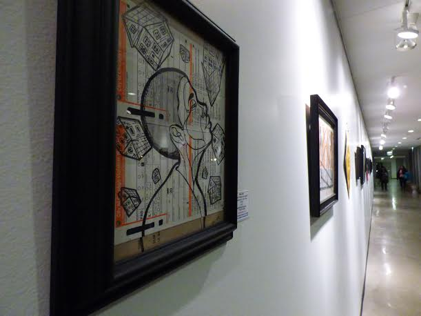
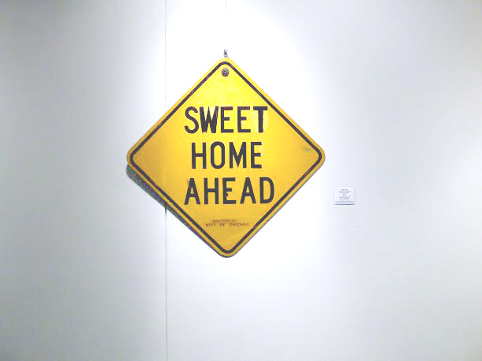
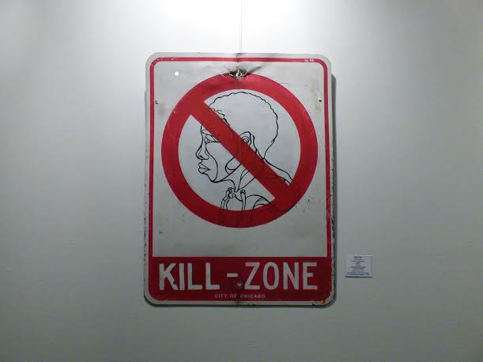
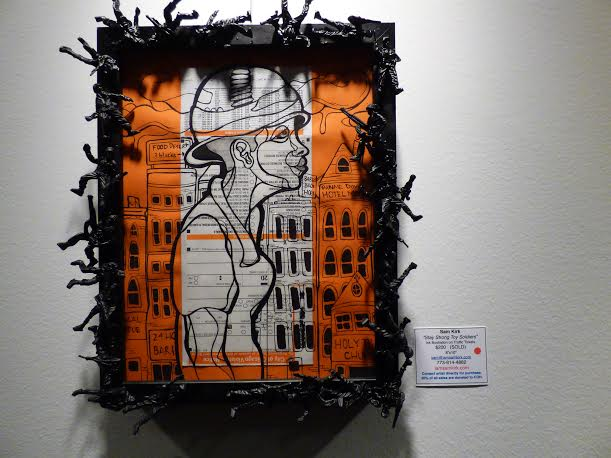

Sam Kirk on “Surviving the Times: An Exhibition on Homelessness and Survival Sex in the LGBT Community”
When talking about the work of multidisciplinary artist Sam Kirk, it is not enough to only talk about the beautiful art she creates. Kirk makes unique and captivating art pieces, different works from fine art and murals to accessories and screen printing, but her work goes beyond the art itself.
For Kirk, art is the tool she uses to “reel people in with the beauty of the work, get them interested in the messages that are layered into it, and start a conversation that they might not have had otherwise,” as she explained when we met up at her Chicago studio. “Art, for me at least, is the awareness-driver. A majority of my work is really heavy, but people tend to be attracted to it because of the color palette, because it’s bright and vibrant.”
Her recent ongoing project exemplifies this use of art as conversation-starter. This project, “Surviving the Times: An Exhibition on Homelessness and Survival Sex in the LGBT community,” is a series of multimedia artwork as well as a panel discussion on homelessness and the sex trade that Kirk organized. Furthermore, a percentage of proceeds from the exhibit’s sales will be donated to the Center on Halsted, which displayed the original “Surviving the Times” pieces and housed the panel discussion in February.

Kirk’s choice of relationship with the Center on Halsted makes so much sense when considering how closely the work the Center does relates to the content of “Surviving the Times.” The Center on Halsted is a comprehensive community center that provides services, programming and community for the diverse LGBT community. Its programming centers on themes of anti-violence, behavioral health, community & culture, a cyber center, HIV/AIDS & STDs, as well as that which is specifically for senior, women and youth members of the LGBT community. The Center’s Youth Program dates back to 1978 and helps young people “realize their full potential through vocational training programs, seminars and leadership development program,” and “creates a safe and confidential environment for young people ages 13-24” who are LGBTQA or allies.
Considering how difficult it is for full-time artists to make a living on their work and how secure funding for social services and community resources is ever more difficult to come by, this type of symbiotic relationship between an independent artist and a LGBT-focused community center is significant. Sam Kirk is a self-identified queer artist who grew up in a biracial family on the segregated southside of Chicago, a background that instilled in her an interest in the kind of social justice issues that the Center on Halsted addresses. Kirk’s art literally financially supports the Center and other organizations’ work and, in turn, is using her art to affect change beyond simple ‘awareness.’
Being a full-time artist that hustles and does much more than just create art is what being an artist actually means for Kirk. She grew up between Bridgeport and Pilsen in Chicago and currently splits her time between Pilsen, where she’s lived for the last 11 years, and Brooklyn, NYC. She explained to us that living and working from two cities is, ironically, more constructive for her work than having just one home base because she can cast a wider net.

Though she travels and works from two different cities and has has done commercial work for bigwigs lie Don Julio and SXSW, the bulk of Kirk’s work is locally focused on communities she belongs to—not only in regards to challenges they face, but also to celebrate their identities and cultures. In Pilsen, for example, her now-recognizable work is featured on the tabletops of Cafe Jumping Bean and in murals. Whereas some commercial art can end up redefining and appropriating publicly visible spaces and neighborhoods, in particular those experiencing gentrification, Kirk instead affirms and expresses the beauty, culture and realities already present.
In the recent “Surviving the TImes” project, Kirk tells a story about queer youth experiencing homeless in multimedia pieces. “When you look through every piece it’s a different interpretation or a different perspective into these individuals’ lives. I use traffic tickets and street signs [as a canvas] to loop in homelessness, and [to show] that this something that happens on the streets.”

In discussing the art of “Surviving the TImes”, Kirk echoed a major point discussed at the related panel she organized, that already marginalized people—LGBTQIA, Black, Brown, displaced and indigent folks, in particular—are revictimized through homelessness, survival sex or being trafficked because those are all criminalized. “[People who are homeless] are also people that are being violated, so drawing their portrait on a traffic ticket or a violation ticket just went hand-in-hand with them living on the streets. Same thing for the traffic signs. There are all these warnings, numbers [statistics], all these different things that people are talking about, but what are we actually doing about it?”

The panel that Sam organized included participants with diverse experience and perspectives on the complex and overlapping issues of sex trafficking, survival sex and LGBT youth homelessness. The panel included Tracy Haim, an executive editor of local LGBT publication, Windy City Times, and founded Pride Action Tank; Lourdes Nieto, a Chicago police officer who does anti-human trafficking work from an informational and criminal justice-perspective; Becca Hofrichter, clinical manager of Youth Housing and Youth Services at The Center on Halsted; Karla Ungui, a licensed clinical professional counselor who works with adolescent refugees and also creates photography and mixed media art; and, of course, Sam Kirk herself.
Even in their diversity of perspectives and flat out disagreement, there was a consensus on the panel that youth homelessness and sex trafficking are major problems in Chicago and the U.S. as a whole, that it’s certainly not just something that happens in other countries, as many might believe. Some of the contributing factors discussed were poverty, the school-to-prison pipeline, parental rejection (i.e. due to religious/cultural beliefs), criminalization within the prison-industrial complex and race. Black and Brown queer youth are much more likely to be homeless and engage in survival sex, and those who are trafficked tend to be already facing economic hardships, oppression and few options. Based on their experiences, the panel offered potential solutions to these overlapping issues.
“Everything that I do is to [create] art that delivers a message and then also has an impact at the end of it. It’s common sense to me; you can’t talk about something and not deliver," Kirk said.
Check out our past Q&A with Sam Kirk here.
For more about Sam Kirk or Provoke Culture:
To learn more, the “Surviving the Times” panel about and homelessness and survival sex in the LGBT community, moderated as a part of the Art Break podcast, can be heard in its entirety below.
Please visit Provoke Culture to view and purchase work by Sam Kirk and other artists; 25% of proceeds are donated to organizations that help women and youth dealing with homelessness, violence or are living under difficult circumstances.
contributing writer: Ilene Palacios
photo credits: Ilene Palacios, Sam Kirk